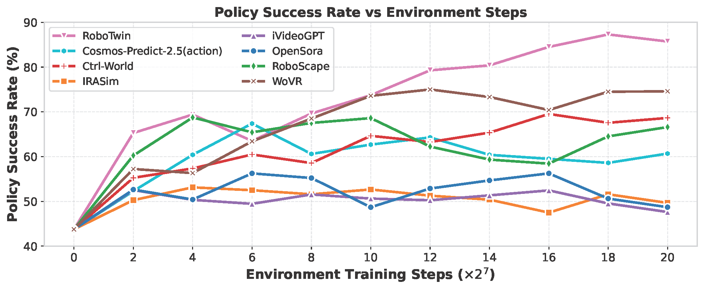

WorldArena 2.0
Extending Embodied World Model Benchmarking on Modality, Functionality and Platform
Overview
WorldArena 2.0 is a standardized benchmark for embodied world models that extends the original WorldArena along three coordinated axes: modality, functionality, and platform. It introduces visuo-tactile evaluation, treats world models as online RL environments, and evaluates across RoboTwin 2.0, LIBERO, and the AgileX split-type ALOHA robot. The goal is not only to measure perceptual quality, but also to verify whether world models remain useful when they must support manipulation, policy improvement, and sim-to-real deployment.
From WorldArena to WorldArena 2.0

Single-modality prediction and perception.
Contact-aware evaluation with tactile signals.
Static scoring of video and tasks.
Interactive rollouts for policy improvement.
Limited to virtual environments.
Cross-embodiment sim-to-real evaluation.
Visuotactile Evaluation
Vision → Visuo-Tactile
WorldArena 2.0 introduces tactile-aware evaluation so that world models must reason about contact, force, slip, and material interaction.
- Multimodal perception and prediction
- Tactile injection via a standardized pipeline
- Better coverage of contact-rich manipulation

Insert HDMI
Lift Bottle
| Model | Tactile Prediction Quality | Task Success Rate (%) | |||
|---|---|---|---|---|---|
| PSNR ↑ | SSIM ↑ | Insert HDMI | Lift Bottle | Avg. | |
| ACT (Baseline) | -- | -- | 20 | 80 | 50 |
| Vidar | 13.97 | 0.278 | 70 | 0 | 35 |
| Genie Envisioner | 13.36 | 0.456 | 0 | 0 | 0 |
| Wan2.2 | 21.26 | 0.746 | 100 | 0 | 50 |
Evaluation as RL Environments
Offline Evaluation → Online RL
The benchmark evaluates whether world models can serve as interactive environments that help train and improve embodied policies, not just predict future frames.
- Closed-loop rollouts with policy updates
- Reward-aware state transitions
- Long-horizon robustness under compounding errors

Click Bell
Adjust Bottle
| Method | Proxy-based | VLM-based | Similarity-based | |||
|---|---|---|---|---|---|---|
| Click Bell | Adjust Bottle | Click Bell | Adjust Bottle | Click Bell | Adjust Bottle | |
| SFT | 43.75 | 55.08 | 43.75 | 55.08 | 43.75 | 55.08 |
| Simulator-based RL | 87.30 | 78.90 | 87.45 | 78.90 | 87.45 | 78.90 |
| OpenSora | 56.25 | 60.16 | 55.27 | 57.03 | 53.13 | 58.00 |
| IRASim | 53.13 | 61.33 | 53.52 | 58.98 | 50.78 | 59.38 |
| iVideoGPT | 52.53 | 56.25 | 48.44 | 58.59 | 52.15 | 60.93 |
| Cosmos-Predict-2.5(action) | 67.38 | 63.48 | 54.10 | 58.40 | 63.09 | 61.13 |
| RoboScape | 68.75 | 60.74 | 55.46 | 59.38 | 63.48 | 59.18 |
| Ctrl-World | 69.53 | 70.70 | 66.80 | 65.04 | 69.92 | 66.02 |
| WoVR | 75.00 | 67.19 | 69.38 | 64.45 | 72.07 | 61.35 |
Analysis of world model and policy interaction step
In evaluating world models as RL environments, we have also analyzed the success rate curves of the policies with increasing the number of policy-environment interaction steps, with the results presented in Figure below. The results indicate that nearly all models can guide policy updates to varying degrees as the number of interaction steps increases.

Sim-to-Real Evaluation
Simulator → Real Robot
WorldArena 2.0 evaluates cross-embodiment generalization from simulation to a real robotic platform, exposing the sim-to-real gap directly.
- RoboTwin 2.0 and LIBERO simulators
- AgileX split-type ALOHA physical robot
- Deployment-oriented performance signal
RoboTwin 2.0
Large-scale bimanual manipulation environment used to test robustness under domain randomization.
LIBERO
Language-conditioned manipulation benchmark to diagnose knowledge transfer under structured tasks.
AgileX ALOHA
Physical robot evaluation platform built around an AgileX split-type teleoperation system.
| Model | RoboTwin 2.0 | LIBERO | Real‑World | |||||||
|---|---|---|---|---|---|---|---|---|---|---|
| Data Engine | Action Planner | Data Engine | Action Planner | Data Engine | Action Planner | |||||
| Task1 | Task2 | Task1 | Task2 | Task1 | Task1 | Task1 | Task2 | Task1 | Task2 | |
| GigaWorld | 2 | 13 | 6 | 19 | 0 | 0 | 0 | 0 | 0 | 0 |
| Genie Envisioner | 7 | 21 | 10 | 20 | 2 | 6 | 0 | 0 | 0 | 20 |
| TesserAct | 1 | 35 | 1 | 35 | 34 | 38 | 0 | 0 | 0 | 30 |
| Vidar | 13 | 53 | 2 | 19 | 22 | 14 | 40 | 0 | 30 | 10 |
| Wan2.2 | 15 | 41 | 12 | 20 | 10 | 24 | 10 | 0 | 10 | 0 |
| CogVideoX | 3 | 28 | 8 | 16 | 0 | 2 | 10 | 10 | 0 | 50 |